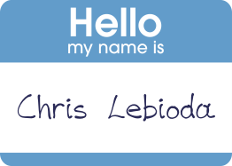
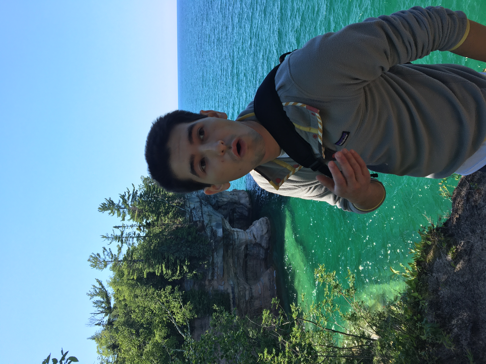

My name is Chris Lebioda and my first expierence with computers was probably playing 2 player DOOM 95 when I was 4 years old.
Although my electrical engineer dad wanted me to become any sort of engineer by stimulating my brain with LEGOS, model rockets,
and early video game prototypes; I strayed towareds business and economics during my college career. I gravitated towards economics
because it made me analyze data in a different way. Beyond the simple value system that economics
forces into you, I loved the way I viewed problems and issues. No longer did I think a simple solution
could fix any systemic issue because any action taken upon that issue has repercussions that must be
considered. I never imagined becoming an engineer until I finished my final project for my first
computer science class where I coded the classic arcade game: Space Invaders. After that, I just wanted to build
more things and here I am 5 years as a software engineer.
- Space LEGOs
- Board Games
- ASMR
- Disc Golf/Basketball/Soccer
- Big Dogs
- Attempting to cook
- Making lists
Software Engineer | Feb 2021 - Present
Tyler Technologies - Troy, MI
Software Developer | May 2018 - Feb 2021
Tyler Technologies - Troy, MI
Univeristy of Michigan - Ann Arbor | Sept 2020 - Present
Master of Science in Information - User-Centered Agile Development
Univeristy of Michigan - Ann Arbor | Sept 2013 - Dec 2018
Duel Bachelor of Science in Computer Science and Economics